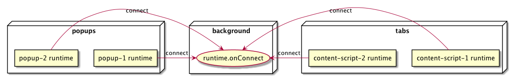
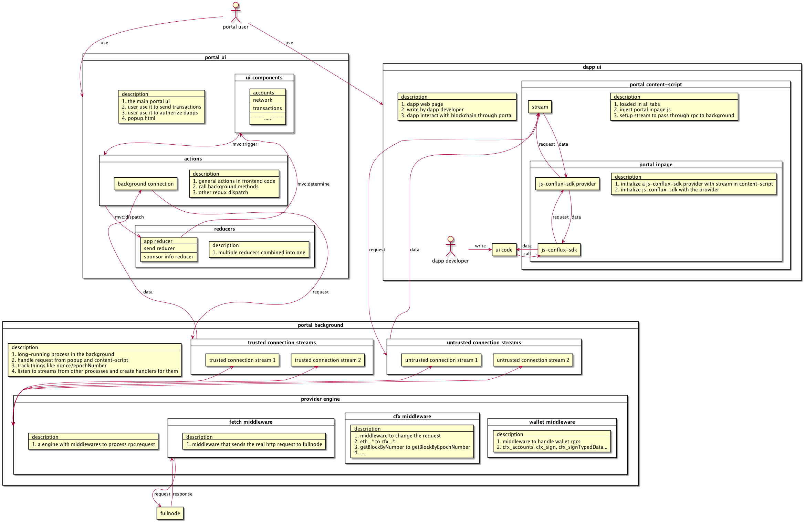
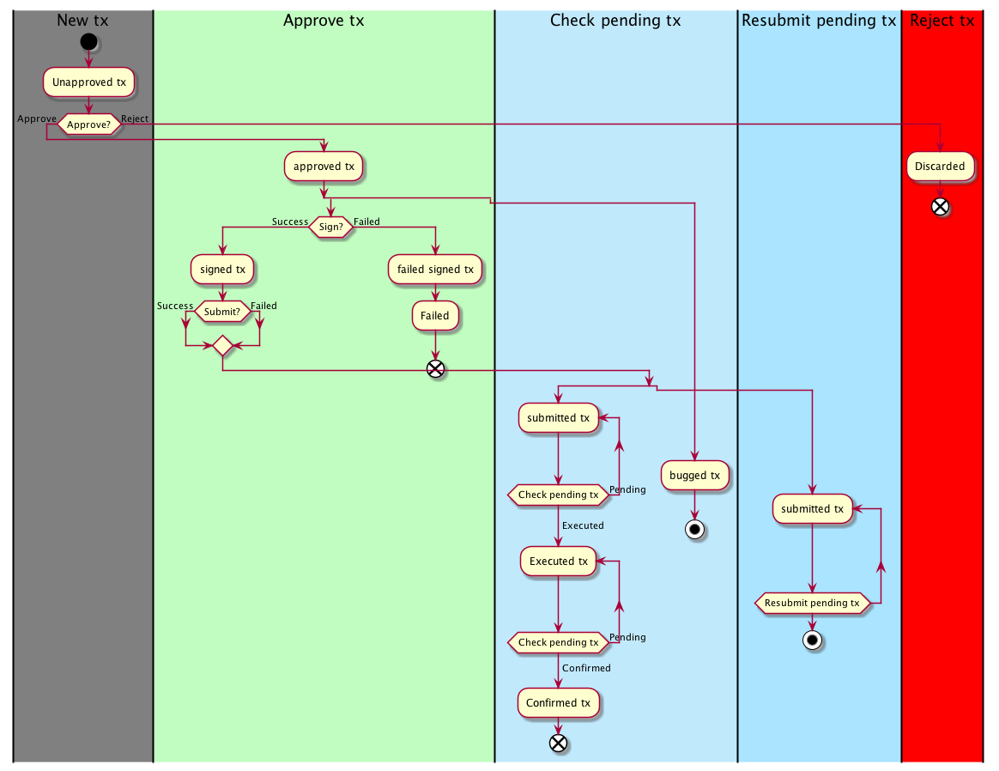

ConfluxPortal Documentation
Table of Contents
- 1. General
- 2. Technical
- 3. Features
- 3.1. Manage account
- 3.2. Manage network
- 3.3. Manage transaction
- 3.4. Manage dapp permissions
- 3.5. Provide api for dapp
- 3.5.1. authorized dapp can get authorized address
- 3.5.2. authorized dapp can get network info and listen on network change
- 3.5.3. authorized dapp can request signature from user through portal
- 3.5.4. authorized dapp can send request to fullnode through portal
- 3.5.5. provide special ui of common signature requests for users
- 3.6. Address Book
- 4. Refactor
1 General
- a browser extension
- stores user’s private key and respond to signature requests
- provide a conflux network provider to
js-conflux-sdkand inject the sdk into browser tabs as a JavaScript interface to interact with:- wallet
- sign message
- sign transaction
- get current user selected account
- get current user selected network
- get other data that not from fullnode
- conflux network
- send HTTP request to a rpc end point
- wallet
- provide ui for user to handle signature requests
- provide ui for user to send assets
- provide ui for user to check transaction info
2 Technical
2.1 Web Extension
- Standard JavaScript api for web extension.
- Browser compatibility: https://developer.mozilla.org/en-US/docs/Mozilla/Add-ons/WebExtensions/Browser_support_for_JavaScript_APIs
- Polyfill by Mozilla: https://github.com/mozilla/webextension-polyfill
- Polyfill by MetaMask: https://github.com/MetaMask/extensionizer
2.1.1 manifest.json
- WebExtension: https://developer.mozilla.org/en-US/docs/Mozilla/Add-ons/WebExtensions/manifest.json
- Chrome: https://developer.chrome.com/docs/extensions/mv2/manifest/
- portal’s manifest.json: https://github.com/Conflux-Chain/conflux-portal/blob/develop/app/manifest.json
- place to declare important extension configuration/information:
- basic extension info, name, version, website…
- declare extension permissions, unlimitedStorage, tabs…
- declare runtimes initialization configuration, background, browser_action, content_scripts…
2.1.2 runtime
- Extension runtime api
window.chrome.extension.runtime - Doc: https://developer.mozilla.org/en-US/docs/Mozilla/Add-ons/WebExtensions/API/runtime
- Has
onConnectandconnectapi to connect to each other can createruntime.Port. runtime.PorthasonMessageandpostMessageapi to send message between
each other. MetaMask use this through extension-port-stream.
- 3 kind of runtimes:
- background
- unique
- long running process
- starts and stops with browser
- popup
- runtime of the popup ui
- process only exists when the popup is opened
- can have multiple popups at the same time
- can be opened with URL like
chrome-extension://<extension-id>/<file>
- content-script
- runtime injected into each tab
- don’t share storage with other type of runtimes
- portal injects this into all open tabs
- background
- code can be found with
runtime.*connectextension-port-streamextensionizer

2.1.3 storage
- Extension storage api
window.chrome.extension.storage storage.localasync version oflocalStorage, up to 5MB withoutunlimitedStoragepermissionstorage.syncautomatically sync between multiple browser, up to 100KB- storage is shared between popup and background runtimes, not shared with content-script runtime
- portal use this to persist ext state to disk, search
createStreamSinkinbackground.js
2.2 Architecture

2.3 Keyring controller
- Github: https://github.com/yqrashawn/KeyringController
- Code to manage mnemonic and private keys
- lock: remove in memory keyring instance and password
- unlock: load encrypted keyring from persist storage then decrypt, generate keyring instance
- import mnemonic/pk: create keyring instance, encrypt and persist mnemonic/pk
- export mnemonic/pk: use password to decrypt the encrypted keyring and send to ui
- signing methods: just interface, the real signing logic is in other package
- account related methods: create account from hd keyring, remove account…
2.3.1 simple keyring
- Github: https://github.com/yqrashawn/cfx-simple-keyring
- private key related code
- generate private key
- signing methods
- account related methods
2.3.2 hd keyring
- Github: https://github.com/yqrashawn/cfx-hd-keyring
- mnemonic related code
- generate mnemonic
- signing methods
- inherit from simple keyring
- account related methods
2.4 Transaction controller

2.5 Permission controller
2.6 Network controller
2.6.1 Network provider engine
run the rpc request through sequence of middlewares
- origin middleware
add a
.originto the req, eg.req.origin="moondex.io" - logger middleware
- onboarding middleware
- filter middleware
eth_newFilter… - subscribe middleware
eth_subscribe,eth_unsubscribe - permission middleware
- handle permissions
- using package rpc-cap https://github.com/MetaMask/rpc-cap
- 1 domain -> multiple account -> multiple permissions
- block
cfx_accounts,cfx_requestAccountsif the domain don’t have permission and popup the auth ui
- wallet watch asset middleware
- An RPC method for allowing users to easily track new assets with a suggestion from sites they are visiting.
- metamask middleware
combination on multiple middlewares
- simple method
web3_clientVersioneth_syncing
- wallet middleware
- handle rpc methods that don’t rely on fullnode
cfx_accountseth_coinbasecfx_sendTransactioncfx_signcfx_signTypedDatacfx_signTypedData_v0cfx_signTypedData_v3cfx_signTypedData_v4personal_signeth_getEncryptionPublicKeyeth_decryptpersonal_ecRecover
- handle rpc methods that don’t rely on fullnode
- pending nonce middleware
- use own get nonce logic for
cfx_nextNonce
- use own get nonce logic for
- pending tx middleware
- use cached tx hash for
cfx_getTransactionByHash
- use cached tx hash for
- simple method
- network middleware
- epoch ref rewrite middleware
rewrite epoch ref to epoch number
- epoch cache middleware
- cache info for each request depends on req.method, eg.
- never cache
cfx_sendTransaction - cache
cfx_gasPrice,cfx_getBalance,cfx_getNextNonceby epoch - cache
cfx_getCode,cfx_getBlockByHashpermanently
- never cache
- cache info for each request depends on req.method, eg.
- in flight cache middleware
code: https://github.com/yqrashawn/cfx-json-rpc-middleware/blob/12cd563aa298ef1d7b8d041b500ec824666620fd/inflight-cache.js#L11 cache request result by payload
- epoch tracker inspector middleware
code: https://github.com/yqrashawn/cfx-json-rpc-middleware/blob/12cd563aa298ef1d7b8d041b500ec824666620fd/block-tracker-inspector.js#L8 check for new epoch number
- cfx rewrite request middleware
rewrite eth request to cfx request, eg.
eth_.*tocfx_.*getBlockByNumbertogetBlockByEpochNumber- ….
- epoch ref rewrite middleware
2.7 Preferences controller
2.8 AddressBook controller
3 Features
3.1 Manage account
3.1.1 user can import/generate hd wallet through mnemonic
3.1.2 user can easily create accounts in hd wallet
3.1.3 user can import private keys
3.1.4 user can export private keys of any account
3.1.5 user can export mnemonic of hd wallet
3.2 Manage network
3.2.1 user can switch between multiple networks
3.2.2 user can add custom network (rpc endpoint)
3.2.3 user can easily connect to local rpc endpoint (default localhost rpc endpoint)
3.3 Manage transaction
3.3.1 display transaction details
3.3.2 display history transactions
3.3.3 display on-going transaction status
3.3.4 speedup/cancel on-going transaction
3.3.5 transaction activity log
3.4 Manage dapp permissions
3.4.1 dapp permission request ui
3.4.2 ui to deauthorize and re-authorize current dapp
3.5 Provide api for dapp
3.5.1 authorized dapp can get authorized address
3.5.2 authorized dapp can get network info and listen on network change
3.5.3 authorized dapp can request signature from user through portal
3.5.4 authorized dapp can send request to fullnode through portal
3.6 Address Book
3.6.1 can add contacts address with alias and use alias as address later
4 Refactor
4.1 Goal
4.1.1 able to add new features effortlessly
- should decouple with frontend
- user/third party can write their own wallet frontend
- we can put frontend code in a separate project, no need to wait for chrome web store review
- portal will be a in-browser service that
- stores users encrypted private key/mnemonic
- inject a rpc provider to web pages
- provide a permission system that intercept rpc request from frontend if not authorized
- provide a popup ui for user to auth rpc request
- portal’s background acts like a rpc server
- portal injects a rpc provider to frontend page
- portal’s bg provides some wallet specific rpc methods
cfx_unlockWalletcfx_lockWalletcfx_importMnemoniccfx_importPrivateKeycfx_requestCurrentSelectedAccount
- frontend needs to have the permission to request each kind of rpc
- unit tests and e2e test
- unit test with jest
- e2e test with cypress
- unit test with jest
4.1.2 compatible with metamask’s current provider api
4.1.3 support hardware wallet with qrcode
4.2 Current problem
4.2.1 don’t support multiple vaults
4.2.2 too much redux code
- https://github.com/facebookexperimental/Recoil
- https://github.com/pmndrs/jotai
- https://github.com/pmndrs/zustand
- store is outside of react state tree
- can be used outside of react components
- support serialize/persist the store
- support redux devtool
4.2.3 can’t auth multiple accounts at once
4.3 Experiment
4.3.1 progress
- use swc to compile js
- use livereload-js for hotreload
- loadable dev env extension,
yarn dev - loadable prod env extension,
yarn prod [ ]support more browsers- chrome
[ ]firefox[ ]brave[ ]opera
[ ]unit test with jest[ ]e2e test with cypress